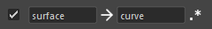
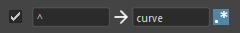

Node Stocker
起動方法
専用のメニューか、以下のコマンドでツールを起動します。
import faketools.tools.common.node_stocker.ui
faketools.tools.common.node_stocker.ui.show_ui()
使用方法
ノードを保存、選択、クリアする方法を説明します。
ノードを保存する
保存したいノードを選択します。
保存するエリアを選択します。エリアは上部のラジオボタンで決定します。
数字が書かれているボタンを中クリックすることで、パイメニューが表示されます。
registerを選択することで、選択されているノードがそのボタンに保存されます。
ボタンにノードが登録されると、ボタンの背景色が変わります。
ノードを選択する
選択したいエリアを選択します。
背景色が変わっているボタンをクリックすることで、そのボタンに登録されたノードを選択します。
モディファイヤキーを使用しての選択 も可能です。選択のルールは Maya の View 上での選択と同じです。
また、エリア上で 短形選択 を行うことで、複数のボタンのノードを一度に呼び出すことができます。
保存したノードをクリアする
保存したノードをクリアするには、ボタンを中クリックし、パイメニューから
unregister を選択します。

オプション
ネームスペースを含めて選択する
ノードを呼び出す際に、ネームスペースを含めて選択するかどうかを設定できます。
ネームスペースを含めて選択するには、チェックボックスをオンにし、下部のドロップダウンメニューから目的のネームスペースを選択します。

※
登録されているノードにネームスペースが存在しない場合は、そのノードにネームスペースを付与した形のノードを選択します。
※
ノードがフルパスも含めて登録されている場合、そのノードの親のネームスペースも置換する仕様になっています。
ノード名を置換して選択する
ノードを呼び出す際に、ノード名を置換して選択することができます。
ノード名を置換して選択するには、チェックボックスをオンにし、下部のテキストボックスに置換前のノード名と置換後のノード名を入力します。
例：登録されているノードの surface を curve に置換する場合

置換を逆転させるには、真ん中の矢印ボタンをクリックします。

また、一番左のボタンをチェックすると、置換を正規表現で行います。
例: 登録されているノードの先頭に curve を追加する場合

※ 正規表現モードではない場合、置換前となるテキストが必要です。
ツールをリフレッシュする

ツールをリフレッシュするには、上部右端の リフレッシュボタン をクリックします。 登録されたノードがファイルから再ロードされ、また ネームスペースのリストも更新されます。
アクティブなタブの登録をすべてクリアする

アクティブなタブの登録をすべてクリアするには、上部右端の クリアボタン をクリックします。
登録されているノードに対しての特殊操作
ボタン上で右クリックすることで、登録されているノードに対しての特殊操作が可能なパイメニューが表示されます。

Set Keyframe
登録されているノードに対して、キーフレームを設定します。